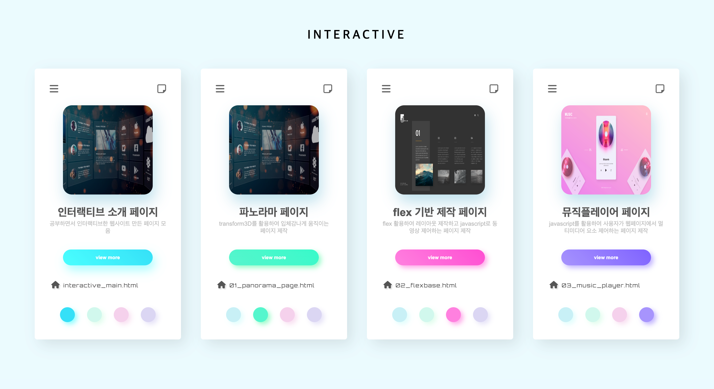
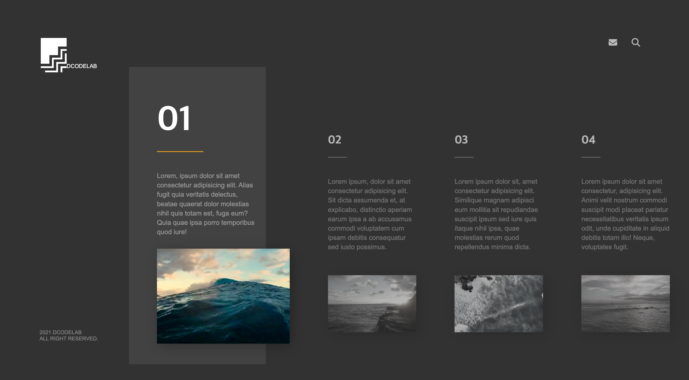

인터랙티브 소개 페이지
공부하면서 인터랙티브한 웹사이트 만든 페이지 모음
view more

파노라마 페이지
transform3D를 활용하여 입체감나게 움직이는 페이지 제작
view more

flex 기반 제작 페이지
flex 활용하여 레이아웃 제작하고 javascript로 동영상 제어하는 페이지 제작
view more

뮤직플레이어 페이지
javascript를 활용하여 사용자가 웹페이지에서 멀티미디어 요소 제어하는 페이지 제작
view more